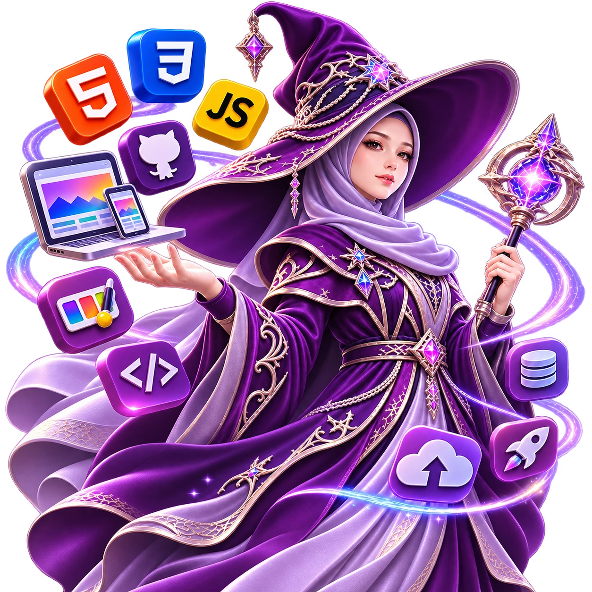
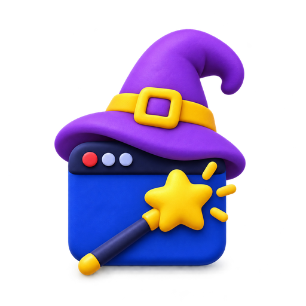

Web Wizard
Pautan rujukan selepas bengkel · From Idea to Live
Cara guna halaman ini
- Pilih apa yang anda perlukan: tonton semula, baca nota atau terus bina.
- Setiap pautan dibuka dalam tab baharu. Halaman ini kekal di sini.
- Simpan halaman ini (bookmark) untuk rujukan akan datang.
Fasilitator: Julie Marlina binti Hasan · Unit e-Learning POLIPD
elearning-polipd.github.io/WebWizard-PoliPD